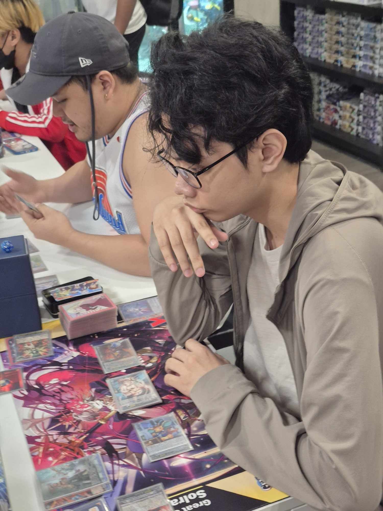

Trading Card Games
I enjoy all types of tabletop games but trading card games are one of my favorite past times in the past few years. In particular, my main game is Cardfight Vanguard and I participate in local weekly tournaments during my free time. Other games I know how to play but not as much are Magic the Gathering, Pokemon, Yugioh, and Shadowverse Evolve.